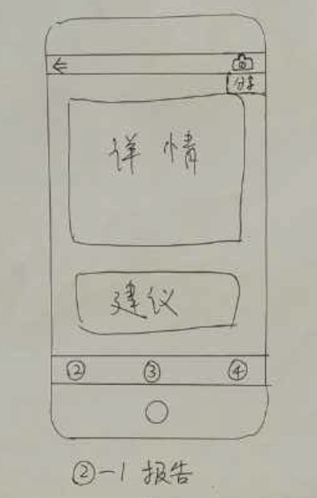
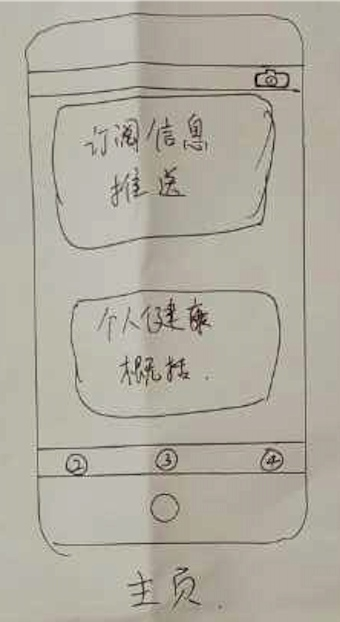
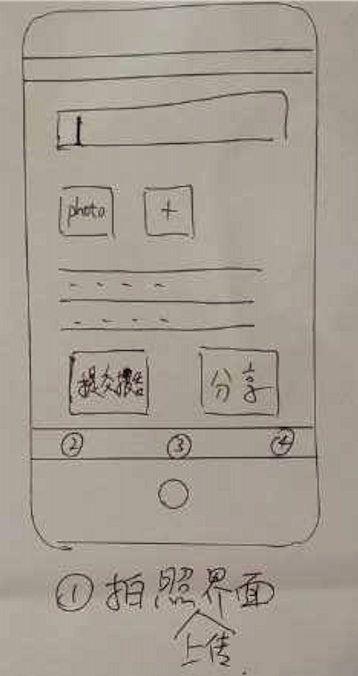
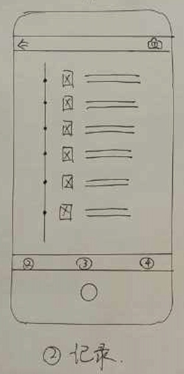
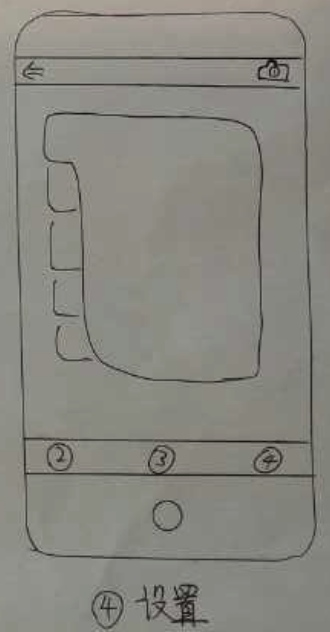

ARM汇编
特殊用途的寄存器
- R0-R3 传递参数与返回值
- R7 帧指针，指向母函数与被调用子函数在栈中的交界
- R9 iOS3以前系统保留
- R12 内部过程调用寄存器，dynamic linker会用到
- R13 SP寄存器
- R14 LR寄存器，保存函数返回地址
- R15 PC寄存器
今天的新人实验站主要讲了做一个新产品的提出到最终发布的整个过程。
我们小组提出的idea是一个记录日常饮食中的营养成分并帮助用户搭配均衡合理的饮食。
APP名称: 营养助手
APP简述: 我们天天吃饭，却很少关注自己的营养搭配，“牙龈出血”、“脂肪肝”等问题比比皆是，均由营养失衡导致。“营养助手”是一款移动APP，通过“晒照-分析-评比”的使用模式，旨在健康饮食。用户首先设定自己的年龄、身高、体重、性别等信息，以供系统获取样本。在平时用餐时，将摄入食物拍照上传，系统同时识别并计算出你所摄入食物包含的营养成分并显示，以供其他用户参考。同时系统定期统计你这段时间的营养摄入，并与其他用户对比，同时给出建议，通过与其他用户的比较刺激用户改善饮食。
在提出了我们的idea后，还需要调查其他人的看法建义，其他人是否有遇到同样的问题等，我们是通过在线问卷调查及线下问答的形式进行的，我们设置的问卷问题如下所示：
1 所从事的职业______________
2 日常饮食大多吃什么?
3 平时有手机拍照的习惯吗?
4 喜欢晒照片吗?
5 自己认为吃的健康吗？
6 吃饭时会刻意关注营养搭配吗？
7 是否关注身边人的饮食情况？
8 是否尔用过类似饮食健康的软件？
9 如果有一款软件能改善自己的饮食习惯，你会比较关注什么?
10 给营养助手的建议和意见________________________________________
从本次问卷调查可以看出参与问卷调查的人群当中80%是白领，超过90%的人吃中式快餐,并且没有用过健康类的APP,超过40%的人关注营养搭配，53%的人认为自己的食物营养搭配一般。从问卷调查的结果看，人们在日常用餐时急需要一款营养搭配的软件来帮助他们记录并改善自己的饮食习惯。
详细问卷调查统计结果请查看附件.
下面是我们针对营养助手设计的原型。






通过该APP，用户可以记录自己的饮食，并了解到自己摄入的营养成分分布，还可以根据系统及其他用户的建议形成自己的合理饮食搭配。
类似Dictionary和Array那种用下标来访问。
@interface Person : NSObject
@property (nonatomic, copy) NSString *firstName;
@property (nonatomic, copy) NSString *lastName;
// object subscription
- (id) objectForKeyedSubscript:(id<NSCopying>)paramKey;
- (void) setObject:(id)paramObject forKeyedSubscript:(id<NSCopying>)paramKey;
// index subscription
- (id) objectAtIndexedSubscript:(NSUInteger)paramIndex;
- (void) setObject:(id)paramObject atIndexedSubscript:(NSUInteger)paramIndex;
@end
NSString *const kFirstNameKey = @“firstName”;
NSString *const kLastNameKey = @“lastName”;
@implementation Person
- (id) objectForKeyedSubscript:(id<NSCopying>)paramKey{
NSObject<NSCopying> *keyAsObject = (NSObject<NSCopying> *)paramKey;
if ([keyAsObject isKindOfClass:[NSString class]]){
NSString *keyAsString = (NSString *)keyAsObject;
if ([keyAsString isEqualToString:kFirstNameKey] ||
[keyAsString isEqualToString:kLastNameKey]){
return [self valueForKey:keyAsString];
}
}
return nil;
}
- (void) setObject:(id)paramObject forKeyedSubscript:(id<NSCopying>)paramKey{
NSObject<NSCopying> *keyAsObject = (NSObject<NSCopying> *)paramKey;
if ([keyAsObject isKindOfClass:[NSString class]]){
NSString *keyAsString = (NSString *)keyAsObject;
if ([keyAsString isEqualToString:kFirstNameKey] ||
[keyAsString isEqualToString:kLastNameKey]){
[self setValue:paramObjectforKey:keyAsString];
}
}
}
- (id) objectAtIndexedSubscript:(NSUInteger)paramIndex{
switch (paramIndex){
case 0:{
return self.firstName;
break;
}
case 1:{
return self.lastName;
break;
}
default:{
[NSException raise:@“Invalid index” format:nil];
}
}
return nil;
}
- (void) setObject:(id)paramObject atIndexedSubscript:(NSUInteger)paramIndex{
switch (paramIndex){
case 0:{
self.firstName = paramObject;
break;
}
case 1:{
self.lastName = paramObject;
break;
}
default:{
[NSException raise:@“Invalid index” format:nil];
}
}
}
@end
利用下标来操作对象。
Person *person = [Person new];
person[kFirstNameKey] = @“Tim”;
person[kLastNameKey] = @“Cook”;
NSString *firstNameByKey = person[kFirstNameKey];
NSString *lastNameByKey = person[kLastNameKey];
NSString *firstNameByIndex = person[0];
NSString *lastNameByIndex = person[1];
if ([firstNameByKey isEqualToString:firstNameByIndex] &&
[lastNameByKey isEqualToString:lastNameByIndex]){
NSLog(@“Success”);
} else {
NSLog(@“Something is not right”);
}